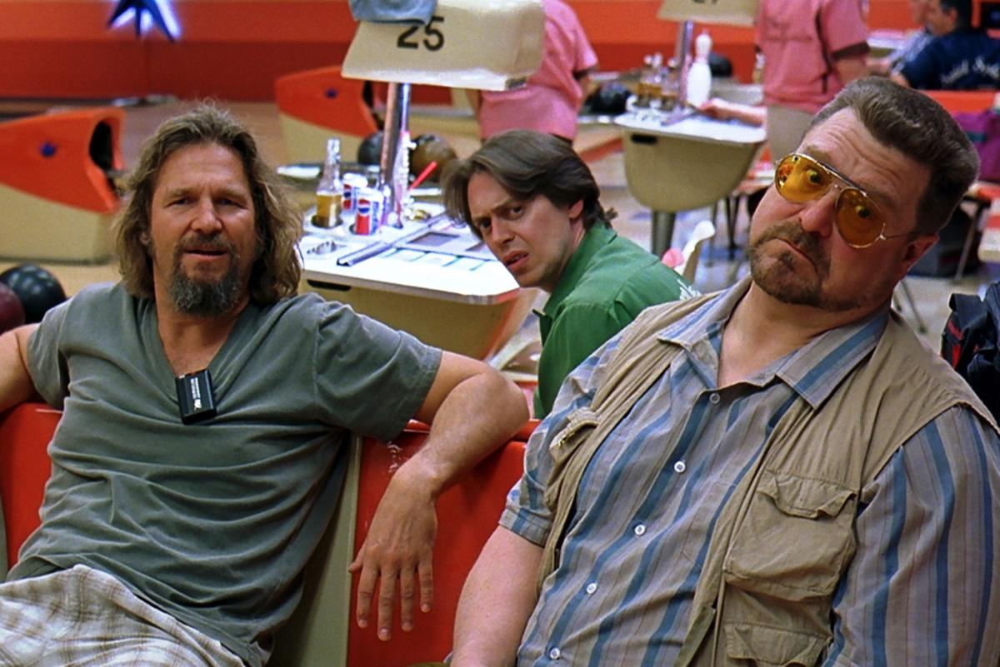

About The Dude
The Dude is the main character in the Big Lebowski. Although the name his parents gave him is Jeffrey Lebowski, "the Dude" is what you call him. He can often be found bowling with his pals, takin' it easy for all us sinners or shopping at Ralphs.
The Dude (left) is bowling with his friends Donny (center) and Walter (right).
Things to Know About the Ol' Duder
(or Duderino, if you're not into the whole brevity thing)
- Didn't go to college
- Really values his rug
- Is into takin' it easy
- Not a fan of nihilists
Friends, Associates, and Special Lady Friends
Walter Sobchak is the Dude's most trusted pal along with Donny Kerabatsos. The Dude also enjoys spending time with the artist Maude Lebowski.